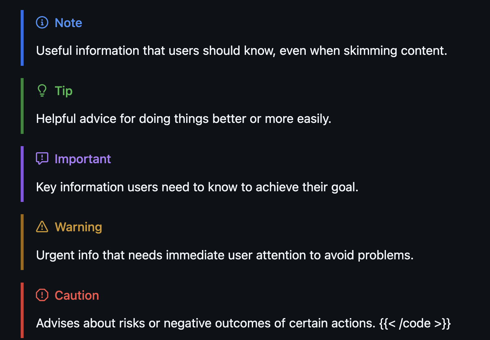

setting up a personal blog with hugo
I’m writing based on my own experiences using hugo and my understanding of how things work, I’ll probably get things wrong so please refer to the hugo docs for correctness
maybe it’s because I’ve been reading a ton of blog posts on bluesky from other engineers and developers or maybe it’s because I have an oversized belief that my thoughts are actually interesting (like most software engineers), but I’m finally starting a blog.
after doing a bit of research, I settled on using hugo for my auto-generated website and hosting through github pages. I considered some self-hosting alternatives like nginx and caddy, but the docs on the hugo site made it really easy to auto-deploy on github pages.
turns out, auto-deployment is a bitch to solve by yourself on a self-hosted machine. I’m not trying to deal with jenkins or buildkite.
plus the fact that github pages is free doesn’t hurt either
it wasn’t even too hard to set-up a custom domain with github pages as well. probably a solid option for static/server-side-rendered website hosting in 2025.
let’s get into it #
to be honest, I’m not a prolific frontend engineer, I’m barely competent with html, and less than competent with css. I’ve never used site generators and I use markdown in obsidian just to take notes and keep track of personal documents.
now the hugo docs may have helped with the deployment, but their ease-of-use ended there. I ended up digging through hugo forums, asking chatgpt, and old fashioned trial’n error to eventually get a working site with all the bells and whistles I wanted.
what the heck is {{}} #
hugo has custom syntax, templating, functions, methods, archetypes… the list goes on forever. it took me quite a while to finally figure out that in .html layout files and .md archetype files you could use {{ <command> }} to access and work with pages, tags, and other data from my website. you can use this to create relative links, set-up reusable page structures, and plenty more.
this is a snippet that displays links to the 5 most recent posts on my site with the date they were posted
1{{ $recent_posts := ( (where .Site.Pages "IsPage" true).ByDate.Reverse) | first 5 }}
2<p>here's a list of my most recent posts</p>
3<ul>
4{{ range $recent_posts }}
5<li>
6 <time datetime="{{ .Date.Format "Jan 02, 2006" }}">{{ .Date.Format "Jan 02, 2006" }}</time>:
7 <a href="{{ .RelPermalink }}">{{.LinkTitle}}</a>
8</li>
9{{ end }}
10</ul>note how you can grab posts from the site with .Site.Pages and filter/sort them using methods like where and .ByDate.
ʕ•ᴥ•ʔ #
one of the first big mistakes I made was using the hugo-bearblog theme. now I have nothing against it, but the example site and styling left much to be desired. I didn’t like that you were limited to only a blog section header, code block styling was atrocious, and honestly, probably since it was my first attempt, I had lots of trouble updating the layouts with my own ideas.
thankfully, I eventually found hugo-bearcub that seems to be just as fast as hugo-bearblog, highly accessible, and with a less opinionated structure. I was able to implement my own sections and updated the nav.html layout to render any a header link for any section I care to generate.
the range function syntax pattern is a bit strange to me coming from a mostly python and java background, but it reminds for a for each loop.
the other really strange thing to me about hugo syntax is that you have to use a . to reference the current local variable (I think?)
layouts, archetypes, and lookup order, oh my! #
I have no idea how hugo site generation works
hugo seems to generate the static site into the public/ directory following the template that is described in layouts/
I think it starts from layouts/_defaults/baseof.html and uses references to other layouts and partials to generate more html.
layouts allow you to pre-define html rendering patterns for parts of the webpage, like the above nav.html
archetypes are similar to layouts except they define the template for generating new content (new markdown pages). they can even use hugo functions and shortcodes
lastly, lookup order in hugo is not exactly straightforward. there’s more explanation in the docs but the primary thing for me to note:
when using a theme, layouts from the themes/ directory are applied first unless they are overwritten in the top-level layouts/ directory
markup layouts #
UPDATE: I have moved to start using hugo-admonitions to render blockquotes.
not all markdown features comes out of the box unfortunately, specifically blockquotes. normally you can specify a type of blockquote style, like NOTE or WARNING, and you get a nicely formatted and colored section:

unfortunately for me, the way hugo generates html for markdown blockquotes does not support types. so I had to write a new markup template:
and by “write”, I of course mean, “find on github”
1{{ $emojis := dict
2 "caution" ":exclamation:"
3 "important" ":information_source:"
4 "note" ":information_source:"
5 "tip" ":bulb:"
6 "warning" ":warning:"
7}}
8
9{{ if eq .Type "alert" }}
10 <blockquote class="alert alert-{{ .AlertType }}">
11 <p class="alert-heading">
12 {{ transform.Emojify (index $emojis .AlertType) }}
13 {{ with .AlertTitle }}
14 {{ . }}
15 {{ else }}
16 {{ or (i18n .AlertType) (title .AlertType) }}
17 {{ end }}
18 </p>
19 {{ .Text }}
20 </blockquote>
21{{ else }}
22 <blockquote>
23 {{ .Text }}
24 </blockquote>
25{{ end }}pagination - bless jmooring #
I was able to seamlessly implement pagination for any multi-page blog posts thanks to super helpful comments and gists posted by jmooring. you can find the relevant code here: jmooring multipage example
by simply adding layout = "multipage" to the params of a content page, it’ll automatically render links to next page
looks like
jmooringis one of the contributors ofhugoand super responsive on thehugoforum!
shortcodes or longcodes #
hugo has support for a feature called shortcodes that allow you to write custom logic functions within your markdown content pages. I’m able to use the recent_posts shortcode as follows in a .md file
1{{\< recent_posts >}}here's a list of my most recent posts
hugo is incredibly precise about the shortcode invocation.
the format must be {{< shortcode >}} with that exact spacing
anchor links #
there is anchor link support in markdown by default with the pattern
1## heading name {#heading}
2
3[heading link](#heading)for example: ʕ•ᴥ•ʔ
but I did miss the on-hover, click-to-copy anchor link pattern from confluence and quip. I fortunately found this super in-depth guide that helped me formulate automatic generation of anchor tags based on the headings with copy-on-click and appear-on-hover.
the partial template essentially just adds an <a> tag to every heading with an anchor classname.
1<h{{ .Level }} id="{{ .Anchor | safeURL }}">{{ .Text | safeHTML }} <a class="anchor" href="#{{ .Anchor | safeURL }}"
2 title="Link to section: {{ .Text | safeHTML }}" aria-label="Link to section: {{ .Text | safeHTML }}">#</a></h{{
3 .Level }}>the majority of the benefit comes from css and I barely know how it works other than changing the opacity to 0 while not being hovered over. I copied the original.css style sheet from the hugo-bearcub theme and added the following styling.
1:root {
2 --main: #137faa;
3 }
4
5a.anchor {
6 color: var(--main);
7 text-decoration: none !important;
8 }
9
10 @media (hover: hover) {
11 a.anchor {
12 opacity: 0;
13 }
14 h1:hover a.anchor,
15 h2:hover a.anchor,
16 h3:hover a.anchor,
17 h4:hover a.anchor,
18 h5:hover a.anchor,
19 h6:hover a.anchor {
20 opacity: 1;
21 }
22 }
23
24 @media (hover: none) {
25 a.anchor {
26 opacity: 0;
27 }
28 }anything else? #
the only annoying part of the workflow left at this point (besides pretty much any site framework changes), is that to actually publish a new post, I have to move the content from my editor, obsidian, to my hugo git repository and push my changes. it may be possible to use rsync or symlinks to link my obsidian content directory directly to a directory in my blog repo, but I’m thinking about exploring ways to access my obsidian synced vaults via an API.
I think it’d be a fun challenge to somehow set up bluesky comments on my blog posts, I’ve seen others do something similar a few times but haven’t looked into it.